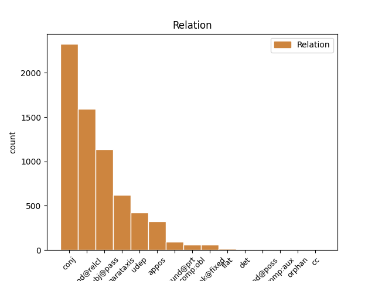
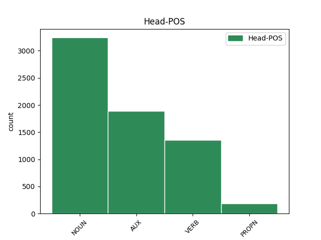
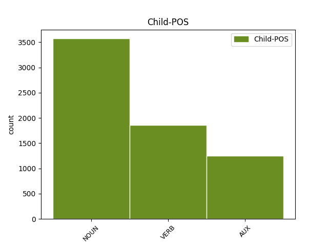

Distribution of features within this leaf



Agreement Rules sorted by frequency.
- When the dependent token is the subject(subj@pass) of the head token, and the dependent token is NOUN.
1 Welke _ _ _ _ 0 _ _ _
2 gebeurtenis gebeurtenis NOUN N|soort|ev|basis|zijd|stan Gender=Com|Number=Sing 3 subj@pass _ _
3 wordt worden AUX WW|pv|tgw|met-t Number=Sing|Tense=Pres|VerbForm=Fin 0 _ _ _
4 wel _ _ _ _ 0 _ _ _
5 aangeduid _ _ _ _ 0 _ _ _
6 als _ _ _ _ 0 _ _ _
7 ' _ _ _ _ 0 _ _ _
8 Zwarte _ _ _ _ 0 _ _ _
9 Vrijdag _ _ _ _ 0 _ _ _
10 ' _ _ _ _ 0 _ _ _
11 ? _ _ _ _ 0 _ _ _
1 Hoe _ _ _ _ 0 _ _ _
2 noemt _ _ _ _ 0 _ _ _
3 men _ _ _ _ 0 _ _ _
4 een _ _ _ _ 0 _ _ _
5 uit _ _ _ _ 0 _ _ _
6 stof stof NOUN N|soort|ev|basis|zijd|stan Gender=Com|Number=Sing 0 _ _ _
7 ( _ _ _ _ 0 _ _ _
8 zijde _ _ _ _ 0 _ _ _
9 , _ _ _ _ 0 _ _ _
10 wol _ _ _ _ 0 _ _ _
11 , _ _ _ _ 0 _ _ _
12 enz. _ _ _ _ 0 _ _ _
13 ) _ _ _ _ 0 _ _ _
14 of _ _ _ _ 0 _ _ _
15 edelmetaal edelmetaal NOUN N|soort|ev|basis|onz|stan Gender=Neut|Number=Sing 6 conj _ SpaceAfter=No
16 , _ _ _ _ 0 _ _ _
17 vervaardigde _ _ _ _ 0 _ _ _
18 hoofd- _ _ _ _ 0 _ _ _
19 of _ _ _ _ 0 _ _ _
20 voorhoofdsband _ _ _ _ 0 _ _ _
21 ? _ _ _ _ 0 _ _ _
1 Aan _ _ _ _ 0 _ _ _
2 welk _ _ _ _ 0 _ _ _
3 dier dier NOUN N|soort|ev|basis|onz|stan Gender=Neut|Number=Sing 0 _ _ _
4 , _ _ _ _ 0 _ _ _
5 dat _ _ _ _ 0 _ _ _
6 in _ _ _ _ 0 _ _ _
7 het _ _ _ _ 0 _ _ _
8 wapen _ _ _ _ 0 _ _ _
9 staat staan VERB WW|pv|tgw|met-t Number=Sing|Tense=Pres|VerbForm=Fin 3 mod@relcl _ SpaceAfter=No
10 , _ _ _ _ 0 _ _ _
11 dankt _ _ _ _ 0 _ _ _
12 het _ _ _ _ 0 _ _ _
13 Franse _ _ _ _ 0 _ _ _
14 voetbaleftal _ _ _ _ 0 _ _ _
15 zijn _ _ _ _ 0 _ _ _
16 bijnaam _ _ _ _ 0 _ _ _
17 ? _ _ _ _ 0 _ _ _
1 Hoe _ _ _ _ 0 _ _ _
2 heette _ _ _ _ 0 _ _ _
3 de _ _ _ _ 0 _ _ _
4 draagraket draagraket NOUN N|soort|ev|basis|zijd|stan Gender=Com|Number=Sing 0 _ _ _
5 waarmee _ _ _ _ 0 _ _ _
6 John _ _ _ _ 0 _ _ _
7 Glenn _ _ _ _ 0 _ _ _
8 de _ _ _ _ 0 _ _ _
9 ruimte _ _ _ _ 0 _ _ _
10 werd worden AUX WW|pv|verl|ev Number=Sing|Tense=Past|VerbForm=Fin 4 mod@relcl _ _
11 in _ _ _ _ 0 _ _ _
12 geslingerd _ _ _ _ 0 _ _ _
13 ? _ _ _ _ 0 _ _ _
1 Hoe _ _ _ _ 0 _ _ _
2 heet _ _ _ _ 0 _ _ _
3 de _ _ _ _ 0 _ _ _
4 ondergrondse _ _ _ _ 0 _ _ _
5 ruimte _ _ _ _ 0 _ _ _
6 waar _ _ _ _ 0 _ _ _
7 hazen _ _ _ _ 0 _ _ _
8 slapen slapen VERB WW|pv|tgw|mv Number=Plur|Tense=Pres|VerbForm=Fin 0 _ _ _
9 en _ _ _ _ 0 _ _ _
10 hun _ _ _ _ 0 _ _ _
11 jongen _ _ _ _ 0 _ _ _
12 groot _ _ _ _ 0 _ _ _
13 brengen brengen VERB WW|pv|tgw|mv Number=Plur|Tense=Pres|VerbForm=Fin 8 conj _ SpaceAfter=No
14 ? _ _ _ _ 0 _ _ _
1 Hoe _ _ _ _ 0 _ _ _
2 noemt _ _ _ _ 0 _ _ _
3 men _ _ _ _ 0 _ _ _
4 iemand _ _ _ _ 0 _ _ _
5 die _ _ _ _ 0 _ _ _
6 omwille _ _ _ _ 0 _ _ _
7 van _ _ _ _ 0 _ _ _
8 zijn _ _ _ _ 0 _ _ _
9 geloof _ _ _ _ 0 _ _ _
10 lichamelijke _ _ _ _ 0 _ _ _
11 kwellingen _ _ _ _ 0 _ _ _
12 heeft hebben AUX WW|pv|tgw|met-t Number=Sing|Tense=Pres|VerbForm=Fin 0 _ _ _
13 verduurd _ _ _ _ 0 _ _ _
14 of _ _ _ _ 0 _ _ _
15 zijn _ _ _ _ 0 _ _ _
16 leven _ _ _ _ 0 _ _ _
17 heeft hebben AUX WW|pv|tgw|met-t Number=Sing|Tense=Pres|VerbForm=Fin 12 conj _ _
18 gegeven _ _ _ _ 0 _ _ _
19 ? _ _ _ _ 0 _ _ _
1 Hoe _ _ _ _ 0 _ _ _
2 heette _ _ _ _ 0 _ _ _
3 de _ _ _ _ 0 _ _ _
4 draagraket _ _ _ _ 0 _ _ _
5 waarmee _ _ _ _ 0 _ _ _
6 John _ _ _ _ 0 _ _ _
7 Glenn _ _ _ _ 0 _ _ _
8 de _ _ _ _ 0 _ _ _
9 ruimte ruimte NOUN N|soort|ev|basis|zijd|stan Gender=Com|Number=Sing 10 udep _ _
10 werd worden AUX WW|pv|verl|ev Number=Sing|Tense=Past|VerbForm=Fin 0 _ _ _
11 in _ _ _ _ 0 _ _ _
12 geslingerd _ _ _ _ 0 _ _ _
13 ? _ _ _ _ 0 _ _ _
1 Vroeger _ _ _ _ 0 _ _ _
2 sprak spreken VERB WW|pv|verl|ev Number=Sing|Tense=Past|VerbForm=Fin 0 _ _ _
3 men _ _ _ _ 0 _ _ _
4 van _ _ _ _ 0 _ _ _
5 een _ _ _ _ 0 _ _ _
6 mongooltje _ _ _ _ 0 _ _ _
7 . _ _ _ _ 0 _ _ _
8 Aan _ _ _ _ 0 _ _ _
9 welk _ _ _ _ 0 _ _ _
10 syndroom _ _ _ _ 0 _ _ _
11 lijdt lijden VERB WW|pv|tgw|met-t Number=Sing|Tense=Pres|VerbForm=Fin 2 parataxis _ _
12 hij _ _ _ _ 0 _ _ _
13 ? _ _ _ _ 0 _ _ _
1 Van _ _ _ _ 0 _ _ _
2 wie _ _ _ _ 0 _ _ _
3 had _ _ _ _ 0 _ _ _
4 Maradona _ _ _ _ 0 _ _ _
5 hulp _ _ _ _ 0 _ _ _
6 gekregen _ _ _ _ 0 _ _ _
7 met _ _ _ _ 0 _ _ _
8 zijn _ _ _ _ 0 _ _ _
9 roemruchte _ _ _ _ 0 _ _ _
10 treffer _ _ _ _ 0 _ _ _
11 tegen _ _ _ _ 0 _ _ _
12 Engeland _ _ _ _ 0 _ _ _
13 tijdens _ _ _ _ 0 _ _ _
14 het _ _ _ _ 0 _ _ _
15 WK wk PROPN N|eigen|ev|basis|onz|stan Gender=Neut|Number=Sing 0 _ _ _
16 voetbal voetbal NOUN N|soort|ev|basis|onz|stan Gender=Neut|Number=Sing 15 appos _ _
17 van _ _ _ _ 0 _ _ _
18 1986 _ _ _ _ 0 _ _ _
19 ? _ _ _ _ 0 _ _ _
1 Vlindercryptogram Vlindercryptogram NOUN N|soort|ev|basis|onz|stan Gender=Neut|Number=Sing 0 _ _ _
2 : _ _ _ _ 0 _ _ _
3 sluwe _ _ _ _ 0 _ _ _
4 schoenlapper schoenlapper NOUN N|soort|ev|basis|zijd|stan Gender=Com|Number=Sing 1 parataxis _ _
1 Polyetheentereftalaat _ _ _ _ 0 _ _ _
2 wordt worden AUX WW|pv|tgw|met-t Number=Sing|Tense=Pres|VerbForm=Fin 0 _ _ _
3 gebruikt _ _ _ _ 0 _ _ _
4 als _ _ _ _ 0 _ _ _
5 kunststof _ _ _ _ 0 _ _ _
6 voor _ _ _ _ 0 _ _ _
7 frisdrankflessen _ _ _ _ 0 _ _ _
8 . _ _ _ _ 0 _ _ _
9 Wat _ _ _ _ 0 _ _ _
10 is zijn AUX WW|pv|tgw|ev Number=Sing|Tense=Pres|VerbForm=Fin 2 parataxis _ _
11 de _ _ _ _ 0 _ _ _
12 verkorte _ _ _ _ 0 _ _ _
13 naam _ _ _ _ 0 _ _ _
14 ? _ _ _ _ 0 _ _ _
1 Welke _ _ _ _ 0 _ _ _
2 Romeinse _ _ _ _ 0 _ _ _
3 keizer _ _ _ _ 0 _ _ _
4 nam nemen VERB WW|pv|verl|ev Number=Sing|Tense=Past|VerbForm=Fin 0 _ _ _
5 zelf _ _ _ _ 0 _ _ _
6 deel deel NOUN N|soort|ev|basis|onz|stan Gender=Neut|Number=Sing 4 compound@prt _ _
7 aan _ _ _ _ 0 _ _ _
8 de _ _ _ _ 0 _ _ _
9 invasie _ _ _ _ 0 _ _ _
10 van _ _ _ _ 0 _ _ _
11 Britannia _ _ _ _ 0 _ _ _
12 in _ _ _ _ 0 _ _ _
13 43 _ _ _ _ 0 _ _ _
14 n.C. _ _ _ _ 0 _ _ _
15 ? _ _ _ _ 0 _ _ _
1 De _ _ _ _ 0 _ _ _
2 ziekte _ _ _ _ 0 _ _ _
3 parotitis parotitis NOUN N|soort|ev|basis|zijd|stan Gender=Com|Number=Sing 0 _ _ _
4 epidemica epidemica NOUN N|soort|ev|basis|zijd|stan Gender=Com|Number=Sing 3 unk@fixed _ _
5 veroorzaakt _ _ _ _ 0 _ _ _
6 ontsteking _ _ _ _ 0 _ _ _
7 van _ _ _ _ 0 _ _ _
8 de _ _ _ _ 0 _ _ _
9 oorspeekselklier _ _ _ _ 0 _ _ _
10 . _ _ _ _ 0 _ _ _
11 Hoe _ _ _ _ 0 _ _ _
12 heet _ _ _ _ 0 _ _ _
13 ze _ _ _ _ 0 _ _ _
14 in _ _ _ _ 0 _ _ _
15 het _ _ _ _ 0 _ _ _
16 Nederlands _ _ _ _ 0 _ _ _
17 ? _ _ _ _ 0 _ _ _
1 Welke _ _ _ _ 0 _ _ _
2 dieren _ _ _ _ 0 _ _ _
3 wijzen wijzen VERB WW|pv|tgw|mv Number=Plur|Tense=Pres|VerbForm=Fin 0 _ _ _
4 hun _ _ _ _ 0 _ _ _
5 soortgenoten soortgenoot NOUN N|soort|mv|basis Number=Plur 3 comp:obl _ _
6 de _ _ _ _ 0 _ _ _
7 weg _ _ _ _ 0 _ _ _
8 naar _ _ _ _ 0 _ _ _
9 een _ _ _ _ 0 _ _ _
10 voedselbron _ _ _ _ 0 _ _ _
11 aan _ _ _ _ 0 _ _ _
12 door _ _ _ _ 0 _ _ _
13 te _ _ _ _ 0 _ _ _
14 dansen _ _ _ _ 0 _ _ _
15 ? _ _ _ _ 0 _ _ _
1 Waar _ _ _ _ 0 _ _ _
2 vond _ _ _ _ 0 _ _ _
3 de _ _ _ _ 0 _ _ _
4 Wereld wereld NOUN N|soort|ev|basis|zijd|stan Gender=Com|Number=Sing 0 _ _ _
5 Klimaat _ _ _ _ 0 _ _ _
6 Conferentie conferentie NOUN N|soort|ev|basis|zijd|stan Gender=Com|Number=Sing 4 flat _ _
7 plaats _ _ _ _ 0 _ _ _
8 in _ _ _ _ 0 _ _ _
9 1995 _ _ _ _ 0 _ _ _
10 ? _ _ _ _ 0 _ _ _
1 De _ _ _ _ 0 _ _ _
2 schade schade NOUN N|soort|ev|basis|zijd|stan Gender=Com|Number=Sing 0 _ _ _
3 , _ _ _ _ 0 _ _ _
4 waaronder _ _ _ _ 0 _ _ _
5 ook _ _ _ _ 0 _ _ _
6 de _ _ _ _ 0 _ _ _
7 waterschade waterschade NOUN N|soort|ev|basis|zijd|stan Gender=Com|Number=Sing 2 mod@relcl _ _
8 aan _ _ _ _ 0 _ _ _
9 andere _ _ _ _ 0 _ _ _
10 panden _ _ _ _ 0 _ _ _
11 , _ _ _ _ 0 _ _ _
12 wordt _ _ _ _ 0 _ _ _
13 op _ _ _ _ 0 _ _ _
14 ruim _ _ _ _ 0 _ _ _
15 tien _ _ _ _ 0 _ _ _
16 miljoen _ _ _ _ 0 _ _ _
17 gulden _ _ _ _ 0 _ _ _
18 geschat _ _ _ _ 0 _ _ _
19 . _ _ _ _ 0 _ _ _
1 Watvoor watvoor NOUN N|soort|ev|basis|zijd|stan Gender=Com|Number=Sing 3 det _ _
2 een _ _ _ _ 0 _ _ _
3 dier dier NOUN N|soort|ev|basis|onz|stan Gender=Neut|Number=Sing 0 _ _ _
4 is _ _ _ _ 0 _ _ _
5 een _ _ _ _ 0 _ _ _
6 lar _ _ _ _ 0 _ _ _
7 ? _ _ _ _ 0 _ _ _
1 We _ _ _ _ 0 _ _ _
2 moeten _ _ _ _ 0 _ _ _
3 ermee _ _ _ _ 0 _ _ _
4 doorgaan _ _ _ _ 0 _ _ _
5 , _ _ _ _ 0 _ _ _
6 het _ _ _ _ 0 _ _ _
7 koste kosten VERB WW|pv|conj|ev Number=Sing|Tense=Pres|VerbForm=Fin 0 _ _ _
8 wat _ _ _ _ 0 _ _ _
9 het _ _ _ _ 0 _ _ _
10 kost kosten VERB WW|pv|tgw|ev Number=Sing|Tense=Pres|VerbForm=Fin 7 udep _ SpaceAfter=No
11 . _ _ _ _ 0 _ _ _
1 Hoe _ _ _ _ 0 _ _ _
2 heet _ _ _ _ 0 _ _ _
3 de _ _ _ _ 0 _ _ _
4 roverhoofdman _ _ _ _ 0 _ _ _
5 uit _ _ _ _ 0 _ _ _
6 ` _ _ _ _ 0 _ _ _
7 Duizend _ _ _ _ 0 _ _ _
8 en _ _ _ _ 0 _ _ _
9 een _ _ _ _ 0 _ _ _
10 nacht _ _ _ _ 0 _ _ _
11 ' _ _ _ _ 0 _ _ _
12 die _ _ _ _ 0 _ _ _
13 de _ _ _ _ 0 _ _ _
14 berg _ _ _ _ 0 _ _ _
15 opent _ _ _ _ 0 _ _ _
16 met _ _ _ _ 0 _ _ _
17 de _ _ _ _ 0 _ _ _
18 spreuk spreuk NOUN N|soort|ev|basis|zijd|stan Gender=Com|Number=Sing 0 _ _ _
19 ' _ _ _ _ 0 _ _ _
20 Sesam _ _ _ _ 0 _ _ _
21 , _ _ _ _ 0 _ _ _
22 open openen VERB WW|pv|tgw|ev Number=Sing|Tense=Pres|VerbForm=Fin 18 appos _ _
23 u _ _ _ _ 0 _ _ _
24 ! _ _ _ _ 0 _ _ _
25 ' _ _ _ _ 0 _ _ _
26 ? _ _ _ _ 0 _ _ _
1 Ik _ _ _ _ 0 _ _ _
2 geloof geloven VERB WW|pv|tgw|ev Number=Sing|Tense=Pres|VerbForm=Fin 0 _ _ _
3 nog _ _ _ _ 0 _ _ _
4 steeds _ _ _ _ 0 _ _ _
5 in _ _ _ _ 0 _ _ _
6 wat _ _ _ _ 0 _ _ _
7 ik _ _ _ _ 0 _ _ _
8 gezegd _ _ _ _ 0 _ _ _
9 heb hebben AUX WW|pv|tgw|ev Number=Sing|Tense=Pres|VerbForm=Fin 2 udep _ _
1 Waar _ _ _ _ 0 _ _ _
2 hij _ _ _ _ 0 _ _ _
3 ons _ _ _ _ 0 _ _ _
4 van _ _ _ _ 0 _ _ _
5 heeft hebben AUX WW|pv|tgw|met-t Number=Sing|Tense=Pres|VerbForm=Fin 0 _ _ _
6 overtuigd _ _ _ _ 0 _ _ _
7 is zijn AUX WW|pv|tgw|ev Number=Sing|Tense=Pres|VerbForm=Fin 5 comp:aux _ _
8 dat _ _ _ _ 0 _ _ _
9 hij _ _ _ _ 0 _ _ _
10 komt _ _ _ _ 0 _ _ _
1 Zij _ _ _ _ 0 _ _ _
2 zou _ _ _ _ 0 _ _ _
3 mams mams NOUN N|soort|ev|basis|gen Number=Sing 4 mod@poss _ _
4 rug rug NOUN N|soort|ev|basis|zijd|stan Gender=Com|Number=Sing 0 _ _ _
5 ingewreven _ _ _ _ 0 _ _ _
6 hebben _ _ _ _ 0 _ _ _
7 en _ _ _ _ 0 _ _ _
8 mam _ _ _ _ 0 _ _ _
9 de _ _ _ _ 0 _ _ _
10 hare _ _ _ _ 0 _ _ _
11 . _ _ _ _ 0 _ _ _
1 " _ _ _ _ 0 _ _ _
2 Indonesie _ _ _ _ 0 _ _ _
3 heeft _ _ _ _ 0 _ _ _
4 ruim _ _ _ _ 0 _ _ _
5 80 _ _ _ _ 0 _ _ _
6 miljoen _ _ _ _ 0 _ _ _
7 inwoners _ _ _ _ 0 _ _ _
8 , _ _ _ _ 0 _ _ _
9 Nederland Nederland PROPN N|eigen|ev|basis|onz|stan Gender=Neut|Number=Sing 0 _ _ _
10 maar _ _ _ _ 0 _ _ _
11 12 _ _ _ _ 0 _ _ _
12 miljoen miljoen NOUN N|soort|ev|basis|onz|stan Gender=Neut|Number=Sing 9 orphan _ _
13 - _ _ _ _ 0 _ _ _
14 dus _ _ _ _ 0 _ _ _
15 heeft _ _ _ _ 0 _ _ _
16 Indonesie _ _ _ _ 0 _ _ _
17 gelijk _ _ _ _ 0 _ _ _
18 . _ _ _ _ 0 _ _ _
19 " _ _ _ _ 0 _ _ _
1 IN _ _ _ _ 0 _ _ _
2 DEZELFDE _ _ _ _ 0 _ _ _
3 mooie _ _ _ _ 0 _ _ _
4 uitvoering _ _ _ _ 0 _ _ _
5 als _ _ _ _ 0 _ _ _
6 Alle _ _ _ _ 0 _ _ _
7 vlees vlees NOUN N|soort|ev|basis|onz|stan Gender=Neut|Number=Sing 0 _ _ _
8 is zijn VERB WW|pv|tgw|ev Number=Sing|Tense=Pres|VerbForm=Fin 7 unk@fixed _ _
9 als _ _ _ _ 0 _ _ _
10 gras _ _ _ _ 0 _ _ _
11 verscheen _ _ _ _ 0 _ _ _
12 de _ _ _ _ 0 _ _ _
13 bundel _ _ _ _ 0 _ _ _
14 45 _ _ _ _ 0 _ _ _
15 gedichten _ _ _ _ 0 _ _ _
16 van _ _ _ _ 0 _ _ _
17 William _ _ _ _ 0 _ _ _
18 D. _ _ _ _ 0 _ _ _
19 Kuik _ _ _ _ 0 _ _ _
20 . _ _ _ _ 0 _ _ _
1 Hij _ _ _ _ 0 _ _ _
2 is _ _ _ _ 0 _ _ _
3 God God PROPN N|eigen|ev|basis|zijd|stan Gender=Com|Number=Sing 0 _ _ _
4 zij _ _ _ _ 0 _ _ _
5 dank danken VERB WW|pv|tgw|ev Number=Sing|Tense=Pres|VerbForm=Fin 3 flat _ _
6 veilig _ _ _ _ 0 _ _ _
7 aangekomen _ _ _ _ 0 _ _ _
8 . _ _ _ _ 0 _ _ _
1 Er _ _ _ _ 0 _ _ _
2 zijn _ _ _ _ 0 _ _ _
3 beelden _ _ _ _ 0 _ _ _
4 van _ _ _ _ 0 _ _ _
5 een _ _ _ _ 0 _ _ _
6 spandoek _ _ _ _ 0 _ _ _
7 in _ _ _ _ 0 _ _ _
8 het _ _ _ _ 0 _ _ _
9 Maagdenhuis _ _ _ _ 0 _ _ _
10 met _ _ _ _ 0 _ _ _
11 de _ _ _ _ 0 _ _ _
12 slagzin slagzin NOUN N|soort|ev|basis|zijd|stan Gender=Com|Number=Sing 0 _ _ _
13 " _ _ _ _ 0 _ _ _
14 Een _ _ _ _ 0 _ _ _
15 democratische _ _ _ _ 0 _ _ _
16 universiteit _ _ _ _ 0 _ _ _
17 is zijn AUX WW|pv|tgw|ev Number=Sing|Tense=Pres|VerbForm=Fin 12 appos _ _
18 niet _ _ _ _ 0 _ _ _
19 mogelijk _ _ _ _ 0 _ _ _
20 in _ _ _ _ 0 _ _ _
21 een _ _ _ _ 0 _ _ _
22 kapitalistische _ _ _ _ 0 _ _ _
23 maatschappij _ _ _ _ 0 _ _ _
24 " _ _ _ _ 0 _ _ _
25 . _ _ _ _ 0 _ _ _
1 Het _ _ _ _ 0 _ _ _
2 wordt _ _ _ _ 0 _ _ _
3 dan _ _ _ _ 0 _ _ _
4 vriendelijk _ _ _ _ 0 _ _ _
5 stil _ _ _ _ 0 _ _ _
6 , _ _ _ _ 0 _ _ _
7 want _ _ _ _ 0 _ _ _
8 niet _ _ _ _ 0 _ _ _
9 iedereen _ _ _ _ 0 _ _ _
10 in _ _ _ _ 0 _ _ _
11 Reims _ _ _ _ 0 _ _ _
12 weet _ _ _ _ 0 _ _ _
13 wat _ _ _ _ 0 _ _ _
14 een _ _ _ _ 0 _ _ _
15 Nederlander _ _ _ _ 0 _ _ _
16 is _ _ _ _ 0 _ _ _
17 , _ _ _ _ 0 _ _ _
18 laat laten VERB WW|pv|tgw|ev Number=Sing|Tense=Pres|VerbForm=Fin 23 cc _ _
19 staan _ _ _ _ 0 _ _ _
20 waar _ _ _ _ 0 _ _ _
21 hij _ _ _ _ 0 _ _ _
22 thuis _ _ _ _ 0 _ _ _
23 hoort horen VERB WW|pv|tgw|met-t Number=Sing|Tense=Pres|VerbForm=Fin 0 _ _ _
24 . _ _ _ _ 0 _ _ _
1 Goalgetter _ _ _ _ 0 _ _ _
2 Groenendijk _ _ _ _ 0 _ _ _
3 nam _ _ _ _ 0 _ _ _
4 een _ _ _ _ 0 _ _ _
5 voorzet _ _ _ _ 0 _ _ _
6 van _ _ _ _ 0 _ _ _
7 links _ _ _ _ 0 _ _ _
8 op _ _ _ _ 0 _ _ _
9 de _ _ _ _ 0 _ _ _
10 borst _ _ _ _ 0 _ _ _
11 en _ _ _ _ 0 _ _ _
12 vuurde vuren VERB WW|pv|verl|ev Number=Sing|Tense=Past|VerbForm=Fin 0 _ _ _
13 met _ _ _ _ 0 _ _ _
14 het _ _ _ _ 0 _ _ _
15 linkerbeen _ _ _ _ 0 _ _ _
16 raak raken VERB WW|pv|tgw|ev Number=Sing|Tense=Pres|VerbForm=Fin 12 compound@prt _ SpaceAfter=No
17 : _ _ _ _ 0 _ _ _
1 Men _ _ _ _ 0 _ _ _
2 bestreed _ _ _ _ 0 _ _ _
3 Hannah _ _ _ _ 0 _ _ _
4 Arendts _ _ _ _ 0 _ _ _
5 opvattingen _ _ _ _ 0 _ _ _
6 over _ _ _ _ 0 _ _ _
7 de _ _ _ _ 0 _ _ _
8 functie _ _ _ _ 0 _ _ _
9 der _ _ _ _ 0 _ _ _
10 joodse _ _ _ _ 0 _ _ _
11 raden _ _ _ _ 0 _ _ _
12 in _ _ _ _ 0 _ _ _
13 het _ _ _ _ 0 _ _ _
14 door _ _ _ _ 0 _ _ _
15 Hitler _ _ _ _ 0 _ _ _
16 bezette _ _ _ _ 0 _ _ _
17 Europa _ _ _ _ 0 _ _ _
18 , _ _ _ _ 0 _ _ _
19 haar _ _ _ _ 0 _ _ _
20 ideeen _ _ _ _ 0 _ _ _
21 over _ _ _ _ 0 _ _ _
22 de _ _ _ _ 0 _ _ _
23 houding _ _ _ _ 0 _ _ _
24 van _ _ _ _ 0 _ _ _
25 het _ _ _ _ 0 _ _ _
26 joodse _ _ _ _ 0 _ _ _
27 volk _ _ _ _ 0 _ _ _
28 - _ _ _ _ 0 _ _ _
29 waarom _ _ _ _ 0 _ _ _
30 hebben _ _ _ _ 0 _ _ _
31 de _ _ _ _ 0 _ _ _
32 joden _ _ _ _ 0 _ _ _
33 zich _ _ _ _ 0 _ _ _
34 als _ _ _ _ 0 _ _ _
35 schapen _ _ _ _ 0 _ _ _
36 naar _ _ _ _ 0 _ _ _
37 de _ _ _ _ 0 _ _ _
38 slachtbank _ _ _ _ 0 _ _ _
39 laten _ _ _ _ 0 _ _ _
40 voeren _ _ _ _ 0 _ _ _
41 ? _ _ _ _ 0 _ _ _
42 - _ _ _ _ 0 _ _ _
43 en _ _ _ _ 0 _ _ _
44 haar _ _ _ _ 0 _ _ _
45 afkeuring _ _ _ _ 0 _ _ _
46 van _ _ _ _ 0 _ _ _
47 Ben zijn VERB WW|pv|tgw|ev Number=Sing|Tense=Pres|VerbForm=Fin 51 mod@poss _ _
48 Goerions _ _ _ _ 0 _ _ _
49 pro-Israelische _ _ _ _ 0 _ _ _
50 propagandistische _ _ _ _ 0 _ _ _
51 opzet opzet NOUN N|soort|ev|basis|onz|stan Gender=Neut|Number=Sing 0 _ _ _
52 van _ _ _ _ 0 _ _ _
53 het _ _ _ _ 0 _ _ _
54 proces _ _ _ _ 0 _ _ _
55 . _ _ _ _ 0 _ _ _
Disagree Examples:
1 Verkiezingen _ _ _ _ 0 _ _ _
2 lossen lossen VERB WW|pv|tgw|mv Number=Plur|Tense=Pres|VerbForm=Fin 0 _ _ _
3 op _ _ _ _ 0 _ _ _
4 dit _ _ _ _ 0 _ _ _
5 moment _ _ _ _ 0 _ _ _
6 niets _ _ _ _ 0 _ _ _
7 op _ _ _ _ 0 _ _ _
8 , _ _ _ _ 0 _ _ _
9 vindt vinden VERB WW|pv|tgw|met-t Number=Sing|Tense=Pres|VerbForm=Fin 2 parataxis _ _
10 Djindjic _ _ _ _ 0 _ _ _
11 . _ _ _ _ 0 _ _ _
1 ,, _ _ _ _ 0 _ _ _
2 We _ _ _ _ 0 _ _ _
3 hebben hebben VERB WW|pv|tgw|mv Number=Plur|Tense=Pres|VerbForm=Fin 0 _ _ _
4 een _ _ _ _ 0 _ _ _
5 concept _ _ _ _ 0 _ _ _
6 nodig _ _ _ _ 0 _ _ _
7 voor _ _ _ _ 0 _ _ _
8 verandering _ _ _ _ 0 _ _ _
9 '' _ _ _ _ 0 _ _ _
10 , _ _ _ _ 0 _ _ _
11 zei zeggen VERB WW|pv|verl|ev Number=Sing|Tense=Past|VerbForm=Fin 3 parataxis _ _
12 Djindjic _ _ _ _ 0 _ _ _
13 in _ _ _ _ 0 _ _ _
14 een _ _ _ _ 0 _ _ _
15 interview _ _ _ _ 0 _ _ _
16 met _ _ _ _ 0 _ _ _
17 de _ _ _ _ 0 _ _ _
18 Duitse _ _ _ _ 0 _ _ _
19 televisie _ _ _ _ 0 _ _ _
20 . _ _ _ _ 0 _ _ _
1 Niet _ _ _ _ 0 _ _ _
2 altijd _ _ _ _ 0 _ _ _
3 zonder _ _ _ _ 0 _ _ _
4 tegenstand _ _ _ _ 0 _ _ _
5 , _ _ _ _ 0 _ _ _
6 want _ _ _ _ 0 _ _ _
7 bij _ _ _ _ 0 _ _ _
8 schietpartijen _ _ _ _ 0 _ _ _
9 kwamen komen VERB WW|pv|verl|mv Number=Plur|Tense=Past|VerbForm=Fin 0 _ _ _
10 negen _ _ _ _ 0 _ _ _
11 handelaren _ _ _ _ 0 _ _ _
12 om _ _ _ _ 0 _ _ _
13 , _ _ _ _ 0 _ _ _
14 zo _ _ _ _ 0 _ _ _
15 meldt melden VERB WW|pv|tgw|met-t Number=Sing|Tense=Pres|VerbForm=Fin 9 parataxis _ _
16 het _ _ _ _ 0 _ _ _
17 Iraanse _ _ _ _ 0 _ _ _
18 staatspersbureau _ _ _ _ 0 _ _ _
19 Irna _ _ _ _ 0 _ _ _
20 . _ _ _ _ 0 _ _ _
1 De _ _ _ _ 0 _ _ _
2 andere _ _ _ _ 0 _ _ _
3 drugs _ _ _ _ 0 _ _ _
4 worden _ _ _ _ 0 _ _ _
5 in _ _ _ _ 0 _ _ _
6 toenemende _ _ _ _ 0 _ _ _
7 mate _ _ _ _ 0 _ _ _
8 gebruikt _ _ _ _ 0 _ _ _
9 door _ _ _ _ 0 _ _ _
10 Iraanse _ _ _ _ 0 _ _ _
11 jongeren _ _ _ _ 0 _ _ _
12 , _ _ _ _ 0 _ _ _
13 die _ _ _ _ 0 _ _ _
14 ontevreden _ _ _ _ 0 _ _ _
15 zijn _ _ _ _ 0 _ _ _
16 vanwege _ _ _ _ 0 _ _ _
17 hoge _ _ _ _ 0 _ _ _
18 werkloosheid werkloosheid NOUN N|soort|ev|basis|zijd|stan Gender=Com|Number=Sing 0 _ _ _
19 en _ _ _ _ 0 _ _ _
20 de _ _ _ _ 0 _ _ _
21 beperkingen beperking NOUN N|soort|mv|basis Number=Plur 18 conj _ _
22 die _ _ _ _ 0 _ _ _
23 de _ _ _ _ 0 _ _ _
24 islamitische _ _ _ _ 0 _ _ _
25 republiek _ _ _ _ 0 _ _ _
26 hen _ _ _ _ 0 _ _ _
27 oplegt _ _ _ _ 0 _ _ _
28 . _ _ _ _ 0 _ _ _
1 De _ _ _ _ 0 _ _ _
2 andere _ _ _ _ 0 _ _ _
3 drugs _ _ _ _ 0 _ _ _
4 worden _ _ _ _ 0 _ _ _
5 in _ _ _ _ 0 _ _ _
6 toenemende _ _ _ _ 0 _ _ _
7 mate _ _ _ _ 0 _ _ _
8 gebruikt _ _ _ _ 0 _ _ _
9 door _ _ _ _ 0 _ _ _
10 Iraanse _ _ _ _ 0 _ _ _
11 jongeren _ _ _ _ 0 _ _ _
12 , _ _ _ _ 0 _ _ _
13 die _ _ _ _ 0 _ _ _
14 ontevreden _ _ _ _ 0 _ _ _
15 zijn _ _ _ _ 0 _ _ _
16 vanwege _ _ _ _ 0 _ _ _
17 hoge _ _ _ _ 0 _ _ _
18 werkloosheid _ _ _ _ 0 _ _ _
19 en _ _ _ _ 0 _ _ _
20 de _ _ _ _ 0 _ _ _
21 beperkingen beperking NOUN N|soort|mv|basis Number=Plur 0 _ _ _
22 die _ _ _ _ 0 _ _ _
23 de _ _ _ _ 0 _ _ _
24 islamitische _ _ _ _ 0 _ _ _
25 republiek _ _ _ _ 0 _ _ _
26 hen _ _ _ _ 0 _ _ _
27 oplegt opleggen VERB WW|pv|tgw|met-t Number=Sing|Tense=Pres|VerbForm=Fin 21 mod@relcl _ SpaceAfter=No
28 . _ _ _ _ 0 _ _ _